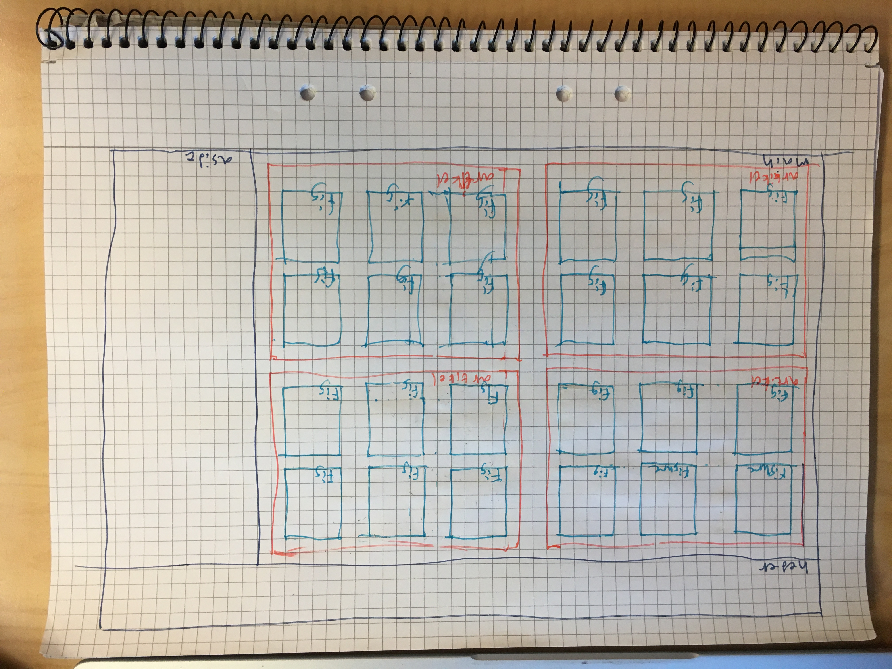
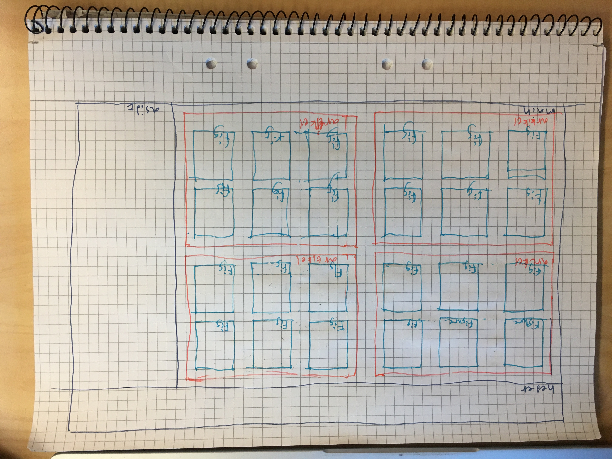
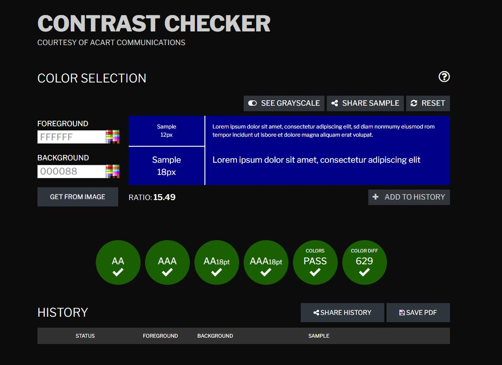
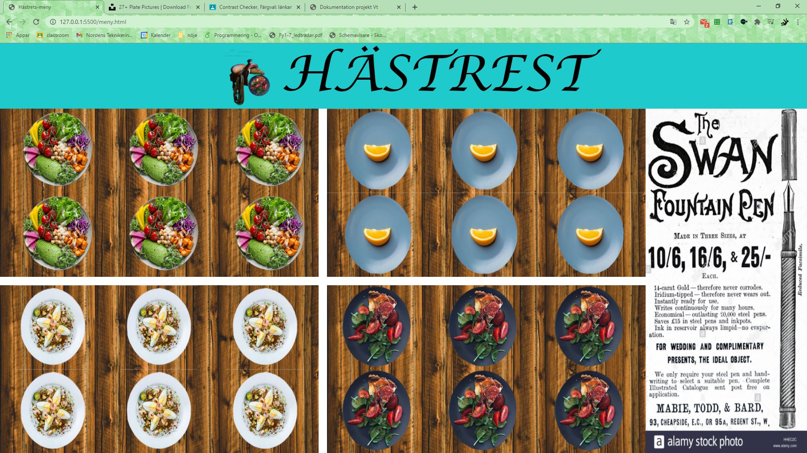
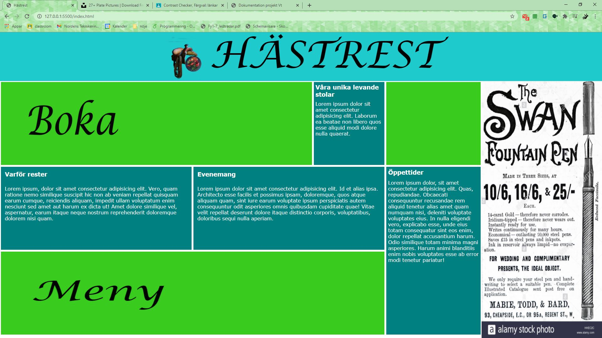
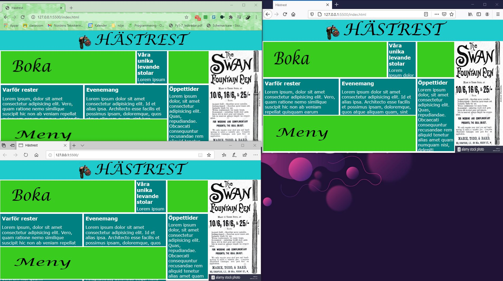
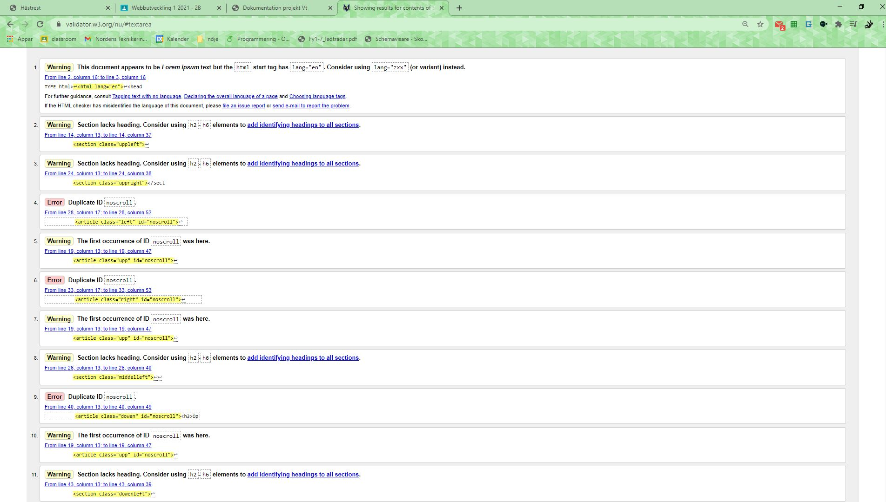

Med den informtion jag har fåt hemma tolkar jag uppgiften som att jag ska skappa en sida för en resturang med en veldigt unik förselgnings metod och målgrupp. Jag har bestemt mig för att göra en resturang där man äter sitande på häst eller pony. som målgrup har jag då hest fantaster och peersoner som vil öva för en lång tur på hestryg som dom inte vill avbryta för att äta. jag kallar returangen hästrest (häst resturang)
 

.JPG)
| Vecka | På lektionen | Utanför lektionen |
|---|---|---|
| 47 | skis homepage och grid för home page | loga |
| 48 | skis meny sida och grid för meny sida | innehåll i hopmepage |
| 49 | skis för sitsta sida(kanke ett bildkolage eller "hästbokning" och grid för sista sida | länka sidorna |
| 50 | innehåll i meny sida och innehåll i sitsta sida | finnputs |
Jag har gort en skist på home page och en grid för home page. Jag fick ett bra resultat men hade ett litet problem att jag råkade döpa både heder och asidens grid area till he. Jag gorde även skisen p portretläge medan datorer är i landskapsläge för det mesta så det är något att tänka på i framtiden.

Jag har gort en skis på menysidan (i landksap) och implemeterat den jag har lagt till en bild för erklam och en plasholder bild för all matt på menyn. det jag tog med mig från lektionen var att det får att använda grid utan att använda grid-template-area. Jag har även använt posiosion för att kuna ha lenkar åvanpå de sections som behöver det.
jag har gorde en skis till boka bord och gort boka bord layouten. Jag kollade även kontrastet
Det var inte så mycket som gick fel i dena proses, det svåraste var att tänka utt hu en bokningsida skule se utt
Jag har dena lektionen arbetat på att göra klart Homepage och meny
 jag testade sedan det i Fifefox och microsoft edge
och det fungerade likadant på alla tre. Jag uptexte dok att jag glömt activera overflow scroll på några articles så jag gorde det, här har vi det enda problemet som
Jag är medveten om att man bara ska anväda ett id på en plats men jag vet inte hur man har flera classer på tag
testingen av de andra sidorna visar att jag kodar fult men det fungerar så där finns något att joba på till nästa projekt.